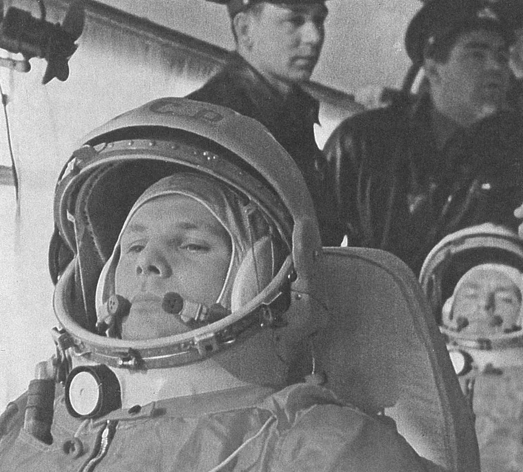
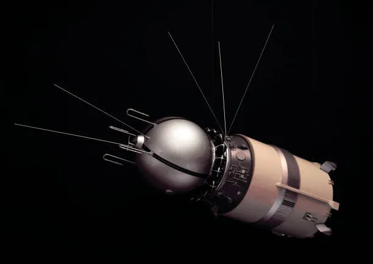

Human Exploration – Next Step to Civilization
Vostok 1 (1961)
Vostok 1 was the first human spaceflight, launched by the Soviet Union on April 12, 1961, carrying cosmonaut Yuri Gagarin,
who became the first human to orbit the Earth. The mission lasted 1 hour and 48 minutes, completing a single orbit at an altitude
ranging from 169 km (105 mi) to 327 km (203 mi), with an orbital period of approximately 89 minutes. Gagarin's spacecraft, a spherical
Vostok 3KA capsule, was launched atop a Vostok-K rocket from Baikonur Cosmodrome in Kazakhstan.

The flight was fully automated, with Gagarin's manual controls locked due to concerns about human reactions to weightlessness.
After reentry, Gagarin ejected from the capsule at 7 km (23,000 ft) and parachuted safely to the ground near Engels, in the Saratov region.
Vostok 1 marked a pivotal moment in the Space Race, demonstrating the feasibility of human spaceflight and establishing the Soviet Union's early lead.
The mission was part of the Vostok programme, which ran from 1961 to 1963 and included six crewed flights, culminating in the first woman in space,
Valentina Tereshkova, aboard Vostok 6 in 1963. The original Vostok 1 spacecraft is now preserved at the National Air and Space Museum in Washington, D.C.

Chandrayaan-1
Chandrayaan-1 was India’s first mission to the Moon, launched by ISRO on 22 October 2008. The mission aimed to explore the lunar surface and gather scientific data.
The spacecraft carried several instruments to study the Moon’s surface, minerals, and topography, creating detailed maps of the Moon.
One of the most important achievements of Chandrayaan-1 was the discovery of water molecules on the Moon’s surface.
This finding completely changed our understanding of the Moon. The mission also helped identify minerals and chemical elements present on the Moon,
contributing valuable data for global research.
Chandrayaan-1 strengthened India’s position in space exploration and showed its technological capabilities to the world.
Overall, this mission was a great success and laid the foundation for future lunar missions by ISRO.

Chandrayaan-3
Chandrayaan-3 was launched by ISRO in 2023 with the aim of achieving a soft landing on the Moon.
It focused on demonstrating safe landing and rover movement on the lunar surface.
The mission successfully landed near the Moon’s south pole region, making India the first country to achieve a landing in this challenging area.
The lander and rover carried instruments to study the surface, temperature, and seismic activity of the Moon.
This helps scientists understand the Moon’s environment. Chandrayaan-3 showed major improvements compared to previous missions,
especially in landing technology and precision.
The mission proved India’s capability in advanced space missions and increased global recognition for ISRO.
Overall, Chandrayaan-3 is considered a major milestone in India’s space journey and opened new possibilities for future exploration.

Luna 2 Mission
Luna 2 was launched by the Soviet Union on 12 September 1959. It was the first spacecraft to successfully reach the Moon.
Unlike modern missions, Luna 2 did not land softly but crashed onto the Moon’s surface. However, it proved that reaching the Moon was possible.
The mission carried instruments to study radiation and magnetic fields in space, providing early data about the environment beyond Earth.
Luna 2 confirmed that the Moon does not have a strong magnetic field, which was an important scientific discovery at that time.
This mission was a major step in the early space race between the Soviet Union and the United States.
Overall, Luna 2 played a key role in the history of space exploration and paved the way for future Moon missions.